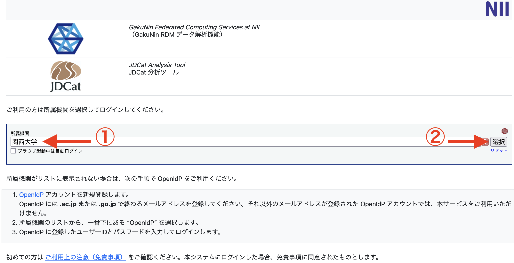
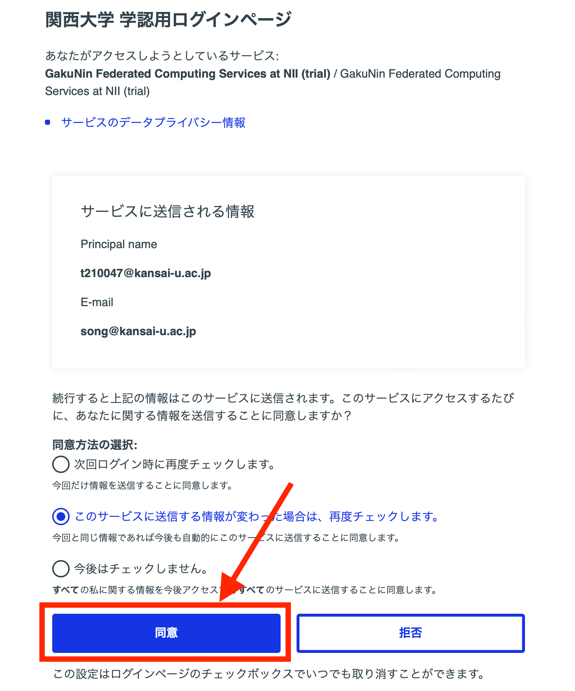
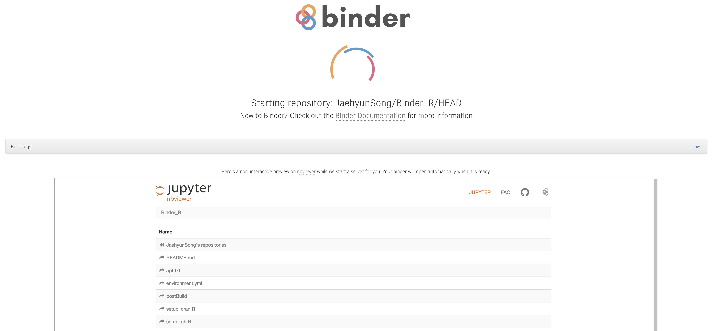
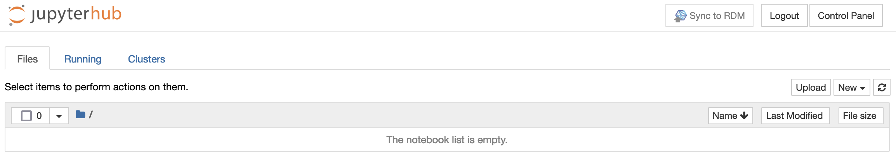
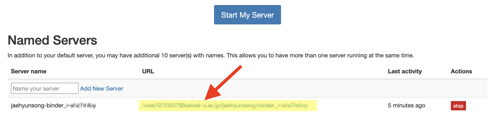
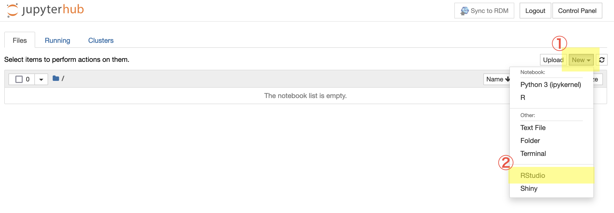
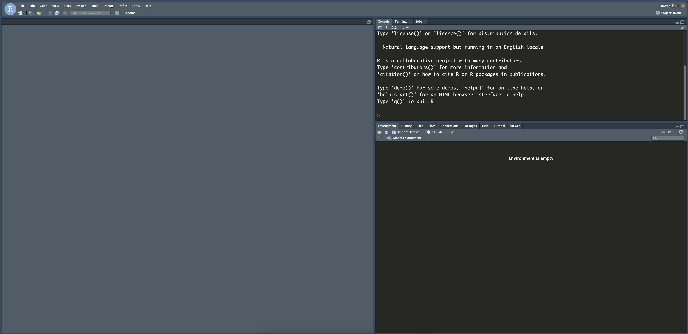
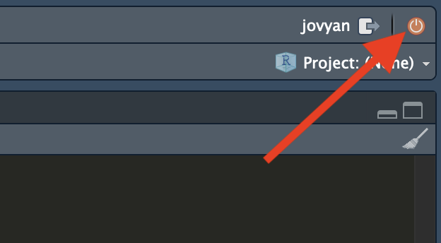
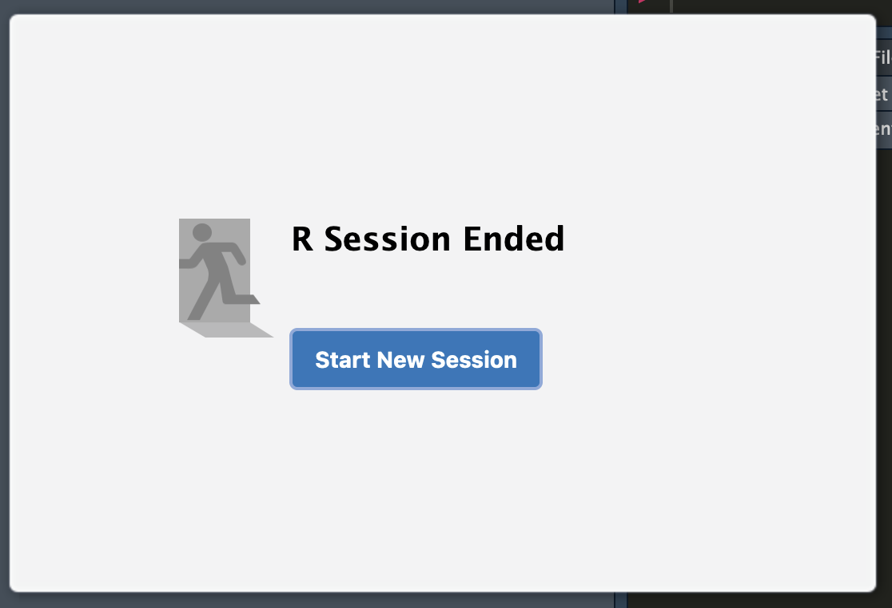

Rの導入
初期設定は国立情報学研究所（以下、NII）のサーバーに自分の作業用スペースを借りる作業である。つまり、初期設定を繰り返すことはNIIのサーバー（のスペース）をいくつも借りることとなり、サーバーを圧迫してしまう可能性がある（一つのアカウントで作成可能なサーバー数は最大10個まで）。したがって、以下の初期設定は授業全体を通じて1回のみ実行すること。
既存のサーバーが使えないなどの問題が生じない限り、このページへのアクセスは不要である。次回から右上のをクリックして、既存のサーバーを立ち上げること。
1 初期設定
本講義の実習はJDCat分析ツールの使用を推奨する。自分のPCにインストールしたR + RStudio、RStuio.cloud、大学PCにインストールされているR + RStudioなどの使用を妨げないが1、本ページの資料と同じ結果が得られることは保証しない。また、実習・分析中に起きた不具合についても授業中には対応しない（オフィスアワーなどでは対応可能）。
以下ではJDCat分析ツールを用いたRおよびRStudioの導入方法について解説する。
手順1: 以下のアドレスにアクセスする。
何回も強調するが、以上のURLは授業全体を通じて1回のみアクセスすること。このURLはアプリに例えると、「インストール」であり、1回だけで十分だ。使いたいアプリを起動する度にインストールする愚かな人はいないだろう。自分の貴重な時間を無駄にし、スマホの容量を圧迫するだけなら、まだましだが、JDCat分析システムは他人も使うシステムだ。つまり、以上のURLを2回以上クリックすることは明らかに迷惑行為である。次回から本サポートページ右上のをクリックして、既存のサーバーを立ち上げること。
手順2: 所属機関に「関西大学」、または「Kansai University」を入力・選択し、「選択」をクリックする。このような画面が表示されない場合は手順2から5は飛ばしても良い。

手順3: 自分の関西大学のIDをパスワードを入力する。こちらのIDとパスワードは関西大学インフォメーション・システムおよびLMSのID/パスワードと同じである。
手順4: このまま「同意します」をクリックする。

手順5: 以下のような画面が表示されたらしばらく待つ。

手順6: 以下のような画面が表示されたら初期設定は完了

手順7: 初期設定が終わったら、すぐRおよびRStudioが利用可能だが、ここでは一旦右上の「Logout」をクリックし、タブ (or ウィンドウ) を閉じる。
2 JDCat分析ツールの起動
初期設定が終わったら、今後、以下の手順でJDCat分析ツールを起動する。
手順1: 以下のアドレスにアクセスするか、本ページの右上にある右上の ボタンをクリックする（右クリックし、新しいタブ or ウィンドウで開くことを推奨する）。
手順2: 必要に応じて認証を行う（初期設定の手順2, 3, 4と同じ）。
手順3: サーバーリストが表示される。URL列のアドレスをクリックする。
- 参考) 初期設定を1回のみ行ったら1行のみ表示されるため混同することはないが、個人利用などを目的に初期設定を複数回行った場合は2行以上が表示されるだろう。本講義に使うサーバーのURLをクリックすること。

手順4: 以下のような画面が表示されたらJDCat分析ツールの起動完了である。この画面を今後、「JupyterHub（ジュピターハブ）のホーム画面」と呼ぶ。
3 RStudioの起動
手順1: JupyterHubのホーム画面の右上の「New」をクリックし、「RStudio」をクリックする。

手順2: 以下の画面が表示されたら、RStudioの起動完了である（RStudioの見栄は初期状態の場合、白ベースである）。

4 RStudioの終了
手順1: RStudio画面右上のオレンジ色のボタンをクリックする。

手順2: 以下のダイアログが表示されたらタブ、またはウィンドウを閉じる。

注
ただし、大学PCにインストールされているR + RStudioの場合、RMarkdown使用の際、正しくコンパイルされない可能性があるため、非推奨。↩︎